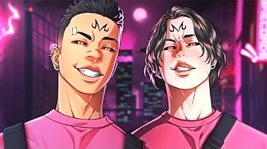

ENYGMA
Nascido sem energia amaldiçoada, Toji
eventualmente deixou a família Zenin
e se casou com uma mulher, tomando
seu nome de "Fushiguro". Ele vendeu
seu filho para a família Zenin
porque acreditava em seu potencial

AKASHI CRUZ
Majin Boo é um criatura mágica, membro da
raça majin, criada pelo mago Bibidi para
auxiliá-lo na dominação do universo.
Conforme a série avança, Majin Boo expele
sua maldade criando dois Majin Boo.
LIL CHAINZ
O sonho do jovem Wakana Gojo é ser um
kashirashi um mestre artesão de
bonecas tradicionais japonesas. De tanto
estar focado em sua arte, ele fica alheio
às novas modas e tendências, e tem
dificuldades de se enturmar com a sala.